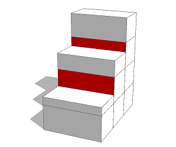

inside / overlaps / touches functions (occlusion queries)
Synopsis
bool inside()
bool inside(target-selector)
bool overlaps()
bool overlaps(target-selector)
bool touches()
bool touches(target-selector)
Parameters
- target-selector
(all | intra | inter) Target selector for the query. intra just checks against shapes in the same shape tree, inter just checks against shapes in other shape trees (i.e. neighboring models of different initial shapes) and all checks both. If no selector is given, all is used.
Returns
true if the geometry of the current shape lies fully inside, overlaps, or touches the geometry of another shape, respectively.
An occlusion query tests for intersections between shapes. There are four different boolean functions available to examine the spatial context of the geometry of the current shape:
- inside(selector) returns true if the geometry of the current shape is completely inside one of the shapes specified with selector.
- overlaps(selector) returns true if the geometry of the current shape volumetrically overlaps one of the specified shapes.
- touches(selector) returns true if the geometry of the current shape overlaps or touches the surface of one of the specified shapes.
Table with occlusion query functions and their results for the five configurations between two 2D polygons; the polygon configurations extend naturally to (closed) 3D surfaces.
For all functions, the parameter selector determines what the current geometry is tested against and can either be all (default), intra, inter, or a specific shape symbol. Thus, the current geometry can be tested against geometries of shapes in both the same model (intra-occlusion i.e. any shape in the current shape-tree) and neighboring models (inter-occlusion i.e. whole shape-trees generated by other neighboring initial shapes). In any case, tests can only be performed against geometries which form a closed surface (i.e. a waterproof mesh which has no boundary edges), other geometries are ignored.
Let us look at a concrete example. The picture below shows a building model. First the rules generated an U-shaped mass model by using the subdivision split operation.
As a consequence, the geometries of the side wings touch the geometry of the main block and unrealistically intersected windows are generated.

Left: No occlusion queries are used. Center: Occluded windows are colored red. Right: In the final model, occluded windows are dropped.
WindowOpening--> Sill s('1,'1,windowSetback) t(0,0,'-1) [ i(openbox) Wall ] Window
The rule first invokes the generation of a window sill, then sets the size of the scope to the depth of the window setback and translates the scope accordingly. Afterwards the openbox asset is inserted to model the wall on the side of the window opening. Finally the actual Window generation is invoked. To make this rule react to the above mentioned occlusions, we just have to add a simple touches() condition:
WindowOpening-->
case touches() : Wall
else : Sill s('1,'1,windowSetback) t(0,0,'-1) [ i(openbox) Wall ] Window
Now, in case the geometry of the WindowOpening shape, which is a rectangular polygon generated by the typical facade split rules, touches another shape's geometry, the rule just invokes the Wall rule and does not create a window. Otherwise the rule is applied as before. The above figure shows the resulting building model on the right. Note that the default selector (all) has been used in the applied occlusion function. In the following the different types of occlusions i.e. selectors are described in more detail.
Intra-occlusion: In case the selector is set to intra, the geometry of the current shape is tested against a practical selection of volumetric geometries generated with the ruleset. The evaluation of intra-occlusion queries is a two-pass process:
- The whole model is generated with all intra-occlusion queries evaluating to false, resulting in the so-called ghost shape tree.
- The derivation is re-started, this time all intra-occlusion queries are evaluated by testing against the geometries of the following shapes in the ghost shape tree (note that only shapes with volumetric geometries which are over the user-defined volume threshold are considered):
- Leaf shapes which are not children of the current shape.
- Shapes where a component split has been applied and which are neither parents nor children of the current shape.
This algorithm does produce only partially correct results since the corresponding ghost shape tree should be updated as soon as an occlusion query returns true. However, he described method proved to be completely satisfying in all applied practical use case scenarios.
Inter-occlusion: In case the selector is set to inter, the geometry of the current shape is tested against volumetric geometries generated on neighboring initial shapes. Therefore the initial shapes within a user-defined distance to the intial shape's bounding box are taken into account (the default distance is 20, see the settings in the Occlusion group in the Grammarcore preferences). The evaluation of inter-occlusion on a set of initial shapes works as follows:- Find all initial shapes within the user-defined radius.
- All corresponding models are generated with all inter-occlusion queries evaluating to false, resulting in the so-called ghost models. A ghost model consists of the geometries of the following shapes (and which are over the user-defined volume threshold):
- Leaf shapes.
- Shapes where a component split has been applied.
- The derivation is re-started, this time all inter-occlusion queries are evaluated against the geometries of the ghost models except the one which belongs to the current initial shape.
Examples
Intra occlusion
 |
Init --> extrude(15)
split(x) { ~5 : Step }*
Step --> s('1, '0.7 * (split.index + 1), '1)
comp(f) { side: Facade | top: X. }
Facade --> split(y) { 4 : Floor }*
Floor --> case touches(intra):
color("#ff0000") X
else:
X
This example demonstrates the result of the touches() occlusion query on shapes
of one shape tree (intra occlusion). |
Copyright ©2008-2015 Esri R&D Center Zurich. All rights reserved.